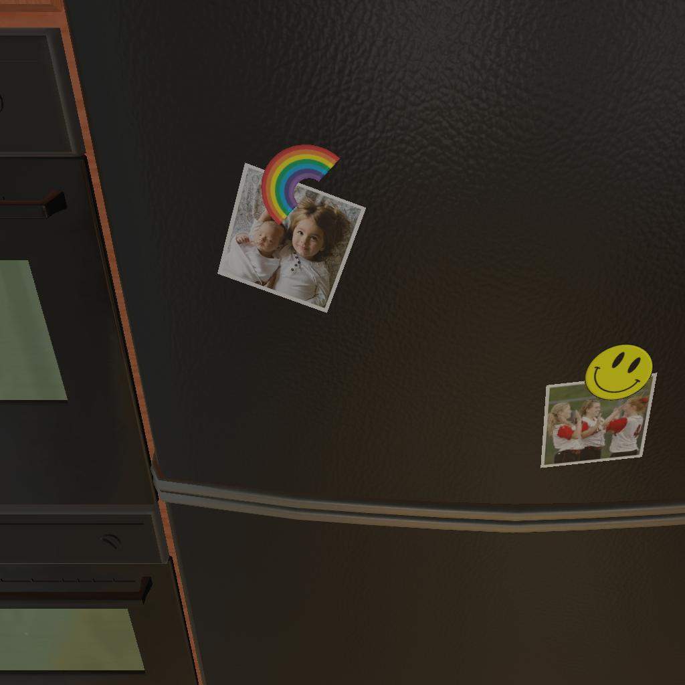

---------------------------------------------------------task: 15---------------------------------------------------------
--------------------------------------------------------------------------------------------------------------------------------------------------------------------
--------------------------------------------------------------------------------------------------------------------------------------------------------------------
Step:--------------------------------------------------------------------------9-------------------------------------------------------------------------------
----------------------------------------
VLM Prompt:
**Task**
Please perform as an embodied AI agent. Our final objective is to cool some mug and put it in coffeemachine. Below is the plan for completing the task, the current observation, alongside historical data and admissible actions for the next step. Please determine the best action for the next step!
**Plan**
Below is a detailed step-by-step plan to complete the task.
1. Find a mug.
2. Pick up the mug.
3. Find a fridge.
4. Cool the mug with the fridge.
5. Find a coffee machine.
6. Place the cooled mug in the coffee machine.
**Current Observation**
Displayed is an image capturing the current position of the agent.
**History Information**
Displayed are the previous observations with their corresponding actions.
Current State 1:
1. Place: Unknown
2. Step Index in Plan: 1
3. Objects: countertop, coffee machine
4. Action: go to cabinet 1
Current State 2:
1. Place: Unknown, near a countertop and a coffee machine
2. Step Index in Plan: 1
3. Objects: Countertop, sink, coffee machine, cabinet 1 (previously checked), cabinet 2
4. Action: Go to cabinet 2
Current State 3:
1. Place: In front of cabinet 2
2. Step Index in Plan: 1
3. Objects: Cabinet 2 (closed)
4. Action: Open cabinet 2
Current State 4:
1. Place: In front of cabinet 2
2. Step Index in Plan: 1
3. Objects: mug
4. Action: go to cabinet 4
Current State 5:
1. Place: In front of a closed cabinet labeled as cabinet 4
2. Step Index in Plan: 1
3. Objects: Mug
4. Action: Open cabinet 4
Current State 6:
1. Place: In front of cabinet 4
2. Step Index in Plan: 1
3. Objects: Mug, cabinet 4, fridge, countertop
4. Action: Take mug 1 from cabinet 4
Current State 7:
1. Place: In front of a fridge and a countertop
2. Step Index in Plan: 2
3. Objects: Fridge, Countertop
4. Action: Go to fridge 1
Current State 8:
1. Place: In front of fridge 1
2. Step Index in Plan: 4
3. Objects: Fridge 1, Mug
4. Action: Open fridge 1
Current State 9:
1. Place: In front of fridge 1
2. Step Index in Plan: 4
3. Objects: mug 1, fridge 1, pan 1, cup 1, potato 1
4. Action: close fridge 1
**Admissible Actions**
(1): go to cabinet 1
(2): go to cabinet 2
(3): go to cabinet 3
(4): go to countertop 1
(5): go to cabinet 4
(6): go to cabinet 5
(7): go to cabinet 6
(8): go to cabinet 7
(9): go to drawer 1
(10): go to drawer 2
(11): go to cabinet 8
(12): go to drawer 3
(13): go to cabinet 9
(14): go to cabinet 10
(15): go to drawer 4
(16): go to microwave 1
(17): go to cabinet 11
(18): go to toaster 1
(19): go to cabinet 12
(20): go to cabinet 13
(21): go to cabinet 14
(22): go to cabinet 15
(23): go to countertop 2
(24): go to coffeemachine 1
(25): go to garbagecan 1
(26): go to countertop 3
(27): go to countertop 4
(28): go to sink 1
(29): go to stoveburner 1
(30): go to stoveburner 2
(31): go to stoveburner 3
(32): go to sinkbasin 1
(33): take pan 1 from fridge 1
(34): take cup 1 from fridge 1
(35): take potato 1 from fridge 1
**Analysis Guideline**
1. Analyze the **History Information** and determine our current step in the plan and our current place.
2. List all visible objects related to the task in the current observation.
3. Analyze the objects in the current observation based on the history and the requirements for the current step, and then determine if we can complete the step with the current observation.
4. Analyze and decide on the most appropriate action to take.
5. Summarize the analysis using the following format: "Analysis: [The summarization of the analysis], The Most Appropriate Action: (i which is the integer.): [Selected action]"
**Notes**
1. We must complete each step of the plan in order and cannot skip steps when the previous ones are not finished.
2. For "Go to" actions listed as "go to xxx [n]", interpret this as there are n distinct actions available: "go to xxx 1", "go to xxx 2", ..., "go to xxx n". Select one specific action from these options instead of using "go to xxx [n]".
3. If receptacles such as drawers, cabinets, and so forth are closed in the current observation, we may try to open them.
4. Pay attention to synonyms and ensure clarity in the terms used.
5. If there is no history available, we are at the first step and the current place is "Unknown".
6. The most appropriate action must be in the **Admissible Actions**, and we cannot generate a new action that is not in the **Admissible Actions**.
**Answer**
Please select the most suitable action by following the **Analysis Guideline**, keeping the above **Notes** in mind.
----------------------------------------
----------------------------------------
VLM Response:
Analysis: According to the history information, the current step in the plan is to cool the mug with the fridge, which is step 4. The current observation shows the agent is in front of the fridge as the last action taken was to close the fridge after presumably placing the mug inside to cool. Since the fridge is now closed and the task to cool the mug is assumed to be in progress or completed, the next step in the plan is to find the coffee machine. However, there is no direct action related to checking the mug's temperature or retrieving the mug from the fridge among the admissible actions. The most appropriate action would be to move towards the coffee machine in preparation for placing the cooled mug, which aligns with step 5 in the plan.
The Most Appropriate Action: (24): go to coffeemachine 1
----------------------------------------
----------------------------------------
>>> Refine VLM Response and Get Pure Action: go to coffeemachine 1
----------------------------------------
-----------------------------------------------------------------
Running time: 15.228993892669678 seconds
Total Money: 7.366249999999995
-----------------------------------------------------------------
-----------------------------------------------------------------
Summarization Prompt:
**Context**
Analysis: According to the history information, the current step in the plan is to cool the mug with the fridge, which is step 4. The current observation shows the agent is in front of the fridge as the last action taken was to close the fridge after presumably placing the mug inside to cool. Since the fridge is now closed and the task to cool the mug is assumed to be in progress or completed, the next step in the plan is to find the coffee machine. However, there is no direct action related to checking the mug's temperature or retrieving the mug from the fridge among the admissible actions. The most appropriate action would be to move towards the coffee machine in preparation for placing the cooled mug, which aligns with step 5 in the plan.
The Most Appropriate Action: (24): go to coffeemachine 1
**Summary Format**
1. Place: [Specify the current location]
2. Step Index in Plan: [Dispkay the current step number in the plan before taking the current action]
3. Objects: [List the objects relevant to the task]
4. Action: [Describe the most appropriate action without the "(x)" and keep the integer of the object]
Please analyze the **Context** and summarize the analysis using the **Summary Format**.
-----------------------------------------------------------------
-----------------------------------------------------------------
Summarization Response:
1. Place: In front of the fridge
2. Step Index in Plan: 4
3. Objects: Mug, Fridge, Coffee Machine
4. Action: Go to coffee machine 1
-----------------------------------------------------------------
-----------------------------------------------------------------
Text Observation:You arrive at loc 24. On the coffeemachine 1, you see a mug 1, and a saltshaker 2.
-----------------------------------------------------------------
UNSUCCEED